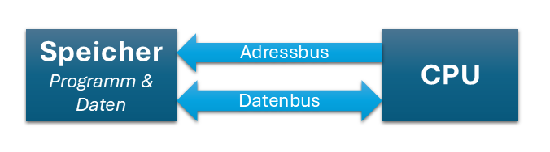

1. Digitale Elektronik
1.1 Aufbau von Digitalrechnern
1.1.1 Begriffe und Abkürzungen
| Abkürzung | Bedeutung |
|---|---|
| CPU | Central Processing Unit |
| ADC | Analog Digital Converter |
| I/O | In/Out |
| RAM | Random Access Memory |
| ROM | Read Only Memory |
Datenbus
Ein Datenbus besteht aus einer oder mehreren Daten-Leitungen, über welche Informationen zwischen verschiedenen Komponenten übertragen werden. Ein Datenbus hat eine bestimmte Breite (z.B. 8bit, 16bit, ...). Beim AVR ist der Datenbus 8bit breit.
Adressbus
Der Adressbus besteht aus einer oder mehreren Adress-Leitungen, über welche einzelne Speicheradressen (= Speicherort von Daten und/oder Befehlen) angesprochen werden können. Somit sind 2^n verschiedene Speicheradressen möglich wobei n die Anzahl der Adress-Leitungen ist. Zum Beispiel können mit einem 16bit-Datenbus 65536 verschiedene Adressen angesprochen werden. Hinter einer Adresse können sich wiederum Daten in unterschiedlicher Breite befinden (8bit, 64bit, ...).
Speicher
Speicher wird zum Speichern von Daten und Programmcode verwendet. Grundsätzlich wird unterschieden zwischen flüchtigen (engl. volatile) und nicht-flüchtigen (eng. non-volatile) Speicher. Flüchtige Speicher verlieren ihren Speicherinhalt, sobald die Versorgungsspannung entfernt wird (Beispiel Hauptspeicher im Computer). Nicht-flüchtiger Speicher behält hingegen die Daten auch wenn keine Versorgungsspannung anliegt (Beispiel Festplatte im Computer).
1.1.2 Grundarchitekturen
Es wird hauptsächlich zwischen zwei Grundarchitekturen unterschieden:
Van-Neumann Architektur
Diese Architektur, benannt nach dem Mathematiker John von Neumann, hat einen einzigen Speicher, der sowohl Daten als auch Programmcode speichert. Der Prozessor (CPU) lädt Befehle und Daten aus demselben Speicher. Dies führt zu einer vereinfachten Implementierug, jedoch auch zu einem Flaschenhals: Befehle und Daten müssen den gleichen Bus benutzen um zur CPU zu gelangen.

Harvard-Architektur
Diese Architektur trennt den Speicher in zwei getrennte Bereich, einen für Daten und einen für Befehle. Dadurch können Daten und Befehle gleichzeitig abgerufen werden - somit erhöht sich die Verarbeitungsgeschwindigkeit. Varianten dieser Architektur finden sich häufig in modernen Mikrocontrollern und digitalen Signalprozessoren, so z.B. auch beim AVR.
1.1.1 Aufbau der CPU
Die CPU als "Gehirn" besteht im Wesentlichen aus zwei Teilen:
Steuerwerk (Control Unit, CU)
Rechenwerk (Arithmetik Logic Unit, ALU)